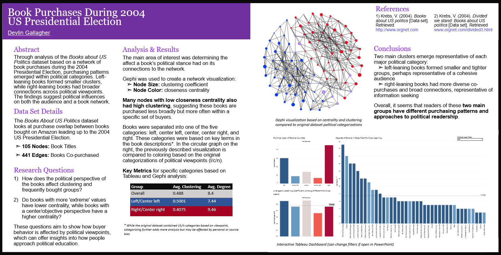

Originally built for my Computational Music Theory class final project, the following is a retrieval system using similar techniques
to TF-IDF in Information Retrieval to return closely related music pieces in a collection given a query file. The project relies on
the PrettyMIDI library to dissect and compare information stored in the files.
> See here for my paper submission for the Mathematics and Computation in Music Conference (draft)
> See here for the github project
The American Statistical Association's DataFest is a 3-day data analysis competition for undergraduate students to showcase their technical & soft skills. In 2025, one of the events was held at RIT, my university; my team, The Horrors, LLC, got 3rd in the "Best Insights" category (despite being our first year participating!). Each group gave a presentation to a panel of judges and peers on our findings, we used Python, R, MATLAB, and Excel to support our hypothesis.
The dataset was comprised of leasing and property information for a leasing company focused in the corporate leasing sector. Out of the various
industries in the dataset, we decided to focus on determining trends in successful Coworking companies, creating a model for the properties they
leased that are factors of their success.
> Paper download (draft)
Using term frequency and bag-of-words methods, the program creates a visualization of a user's LinkedIn connections. Using exported data from LinkedIn, a network graph is generated using the Networkx and MatPlot libraries. With node colors based on search terms and/or frequency of terms from the root user's headline, it creates a simple visualization of a user's connections. The distances of each node from the root user also correspond to the duration of that connection. Additionally, each node is hyperlinked to that user's profile, making it easier to migrate this information back to the platform.
Each node's color is determined by an RGB value, this value is determined by the top three 'relevant' terms from term frequency compared to the root user's headline. If a user's headline contains none of the most frequent terms, then the color is grey; otherwise, the RGB value (aka the relevancy) is calculated using term frequency. For now, the program only takes individual words into account (so combined phrases are not factored into anything). The user can also provide (up to three) terms to search by/include by default in the RGB calculation, regardless of how often they appear.
Based on a dataset from 2004, collected by Krebs, V., I wrote up an analysis on grouping behavior of political books purchases from during the US presidential election. Through graph analysis using Gephi and Tableau, I determined several groups of "buyers" for political books; also categorizing their estimated leanings using their purchases based on clustering and centrality. I also hypothesized how these groups have changed in recent elections and what other topics this model could apply to.
The graph has 105 nodes and 441 edges, where the edges represent books that were often bought together. The average degree was 8.4 (so people were buying 9-10 books). I ran though a few different layouts, and decided Fruchterman-Reingold's was visually appealing and made graphical sense. When working with the graph in Gephi, I applied a color ranking based on closeness centrality (pink is low, green is high) and node sizing based on clustering (the smaller the node, the lower the coefficient). I found that many nodes with low closeness centrality also had high clustering, which I think implies that while those books may not be bought with as wide of a variety, they are frequently bought with a small group.

This is one of my first projects, back from high school, but I am still very proud of the work I put in, even today. Made in Python, you play as a detective tasked with
solving a murder mystery. While a relatively simple premise, the real twist is when you replay it; there are 9 unique endings, with about 3 achievable in every run (the rest are
dependent on random events).
> See here to give it a try!
Working with a variety of global clients to bring them key insights through Ivy Capital's network. I participated in calls with entrepreneurs and CEOs for variety of companies, including TDK, ISA, Auddy, and many more. Since Ivy is agnostic on sector, I quickly adapted to meet the needs of varying companies; communicating with pre-seed to Series B expansions. By using JSON, I also created workflows with Microsoft integration to automate processes, allowing the team to focus on client engagement:
Additionally, I've also made adjustments to their website in JavaScript and HTML, increasing usability and accessibility. I optimized Ivy Capital's website for Google SEO rankings, increasing the score by more than 20 points. I also increased accessibility by 25%, based on SiteImprove AI's scoring, this included ensuring all the elements were keyboard-navigable, a screen reader could accurate parse each page, and the site elements had high readability contrast. These changes have had a proven effect, as site traffic during my internship has overall increased by 33% (per month).
Responsible for website management, content migration, and Campus Groups management. Site traffic has increased by more than 120% and user stickiness (Weekly users / Monthly users) has steadily increased
by 25%. Our retention rate is on average 65% higher than expected, according to Google Site Analytics; our user engagement duration has also increased by almost 2 weeks. As a part of Eboard staff, I am also
responsible for attending and leading weekly meetings with general members and university staff. This includes giving website usage demos for members, presentations on new features, and executing feedback
on website features.
> Click here for Reporter's website
Part-time student at DVU, taken courses in Video Editing, Physics & Mathematics, and Business.
The Global Career Accelerator offers courses that provide the soft skills needed for global teamwork and professional development. I took courses in Data Analytics and Data Visualization.